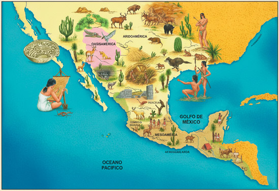

Civilizaciónes Aridoamerica
Civilizaciónes Aridoamerica
Aridoamérica es una región cultural de América Central que abarca parte del norte de México y parte del sudoeste de Estados Unidos. Es una de las tres regiones culturales que identifica la antropología para estudiar a los pueblos antiguos que habitaron el actual territorio de México. Las otras dos regiones son Oasisamérica y Mesoamérica.
Los pueblos que habitaron Aridoamérica antes de la colonización española de la región fueron de una gran diversidad cultural. Los especialistas han identificado más de treinta identidades culturales distintas que en su mayoría mantuvieron poco contacto entre sí.
Algunos estudiosos agrupan a los pueblos aridoamericanos por su lengua o por la región que habitaban. Entre estos grupos, se pueden identificar:
- Acaxees. Habitaban la zona montañosa de la Sierra Madre Occidental. Se agrupaban en grupos de familias extensas y practicaban la agricultura de maíz, frijoles, calabazas y otros frutos.
- Chichimecas. Eran un conjunto de culturas (llamadas así por los pueblos mesoamericanos) que habitaban parte de los actuales estados mexicanos de Jalisco, Aguascalientes, Zacatecas, Guanajuato, San Luis Potosí y Querétaro. Entre ellas, se encontraban los caxcanes, los tecuexes, los jonaces, los guamares, los guachichiles, los pames y los zacatecos. Eran sociedades nómadas y seminómadas, y algunas practicaban cultivos ocasionales.
- Monguis. Eran un pueblo nómada que se dedicó a la caza y la recolección en las costas del golfo y las sierras de California. Se organizaban en tribus guerreras que competían entre sí por los recursos naturales y el control de ciertos espacios.
- Xiximes. Ocupaban la región serrana del actual estado mexicano de Sinaloa. Fueron otro de los pueblos sedentarios aridoamericanos que practicaban la agricultura y se asentaron de manera permanente. Construyeron “casas en acantilado”, un tipo de vivienda que se hacía dentro de las cuevas en las sierras.
- Yumanos. Eran un conjunto de pueblos diversos (como los cucapá, los yuma, los mojave y los halchidhoma) que habitaban las zonas de Baja California y Arizona. Estos pueblos crearon asentamientos semipermanentes y mantuvieron contactos comerciales con pueblos de otras zonas de la región aridoamericana.
